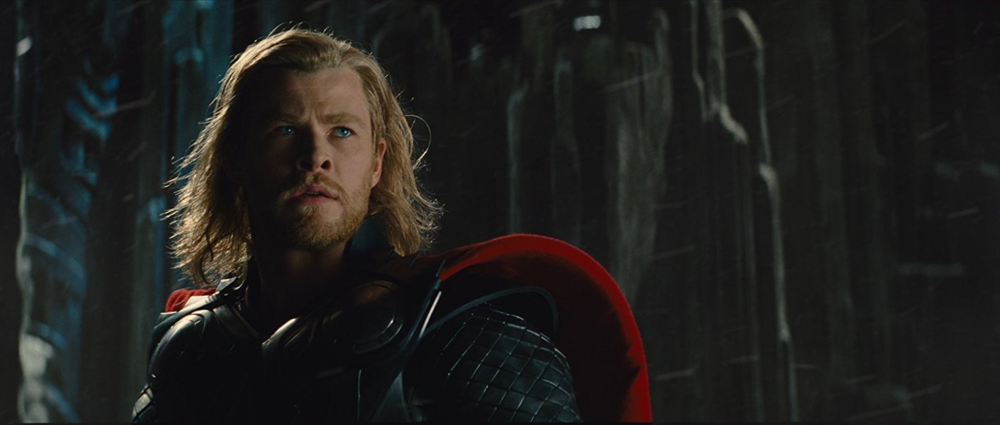

Thor
Thor (2011) -filmweb

Thor (Chris Hemsworth) to potężny, lecz niezwykle arogancki wojownik.
Jego działania doprowadzają do zaostrzenia zażegnanego niegdyś konfliktu.
Jego ojciec, Odyn (Anthony Hopkins), najwyższy spośród bogów,
poirytowany zachowaniem syna wyrzuca go z Walhalli i zmusza do zamieszkania wśród śmiertelników.
Tam Thor poznaje piękną panią naukowiec, Jane Foster (Natalie Portman), za której to sprawą bardzo się zmienia.
Jane okazuje się również jego pierwszą miłością. Na Ziemi Thor dowiaduje się, co znaczy być bohaterem,
gdy będzie musiał powstrzymać złowrogie siły zesłane z Asgardu przez przebiegłego boga, Lokiego (Tom Hiddleston).
Strona główna